開卷有益 ／
分科測驗 ／ 物理 ／ 111 年111 年分科測驗物理試題與答案
這一頁是民國 111 年分科測驗物理的整份歷屆試題，共 26 題，題目與標準答案出自大考中心 分科測驗歷年試題（依著作權法 §9，考試試題不受著作權保護），其中 26 題附有詳解。以下逐題列出題幹、選項與答案；要計時作答或記錄成績，請用線上練習。
大學入學考試中心原始場次代碼：分科物理
線上作答這一科 →
全部 26 題
第 1 題
下列何者等於1.0 N 的力?
（A） 能使質量為1.0 g之物體的加速度為 1 . 0 cm / s 2 的力（B） 能使質量為1.0 kg之物體的加速度為 9.8 m / s 2 的力（C） 能使質量為1.0 kg之物體的加速度為 1 . 0 m / s 2 的力（D） 質量為1.0 g之物體所受的重力（E） 質量為1.0 kg之物體所受的重力答案：（C）
詳解與考點 正解：牛頓第二定律給出 F=ma。對（C），m=1.0 kg，a=1.0 m/s^2，所以 F=1.0 kg×1.0 m/s^2=1.0 N，故選 C。
A：1.0 g=1.0×10^-3 kg，1.0 cm/s^2=1.0×10^-2 m/s^2，故 F=1.0×10^-5 N，不是 1.0 N。
B：F=1.0 kg×9.8 m/s^2=9.8 N，為 1.0 N 的 9.8 倍。
D：1.0 g 物體的重力約為 1.0×10^-3 kg×9.8 m/s^2=9.8×10^-3 N，遠小於 1.0 N。
E：1.0 kg 物體的重力約為 1.0 kg×9.8 m/s^2=9.8 N，不是 1.0 N。
本題考點：牛頓第二定律（Newton's second law）——力的大小用 F=ma 計算，質量必須以 kg、加速度必須以 m/s^2 代入；牛頓（newton）——1 N 定義為使 1 kg 物體產生 1 m/s^2 加速度的力；國際單位制（International System of Units）——遇到 g、cm 等前綴單位時，先換成基本單位再相乘。
第 2 題
如圖1 所示,質量m 的甲球自高度H 處,由靜止開始沿光滑軌 甲
道下滑至水平部分後,與質量亦為m 的靜止乙球發生總動能守
恆的一維碰撞。已知重力加速度為g ,且取水平向右為正值速 H 乙
度的方向,則兩球碰撞後,甲球的速度 1v 與乙球的速度 2v 為下 圖1
列何者?
1 1
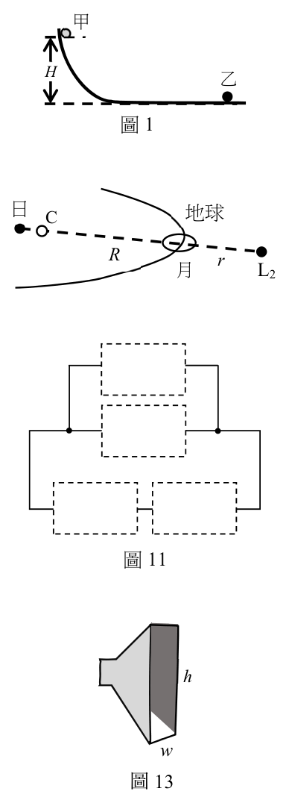
（A） v1 = v2 = 2 gH（B） v1 =−v2 =− 2 gH（C） v1 =− v2 = gH
2 2（D） v1 = 0 , v 2 = 2 gH（E） v1 = 0 , 2v = gH答案：（D）
詳解與考點 正解：甲球由高度 H 靜止下滑，機械能守恆給 1/2 mv0^2=mgH，因此碰前 v0=√(2gH)。兩球質量相等、乙球原先靜止，且是一維彈性碰撞，碰後兩球交換速度；故 v1=0，v2=√(2gH)。故選 D。
A：兩球碰後同速會使動量與彈性碰撞的動能條件無法同時滿足。
B：甲球不會以相同速率反彈；相等質量的一維彈性碰撞中，原先靜止的乙球取得甲球速度。
C：兩球速度相反且同量值會使總動量為零，與碰前向右的 mv0 不符。
E：v2=√(gH) 少了由 1/2 mv^2=mgH 得到的係數 2。
本題考點：機械能守恆——光滑軌道下以 mgh=1/2 mv^2 求碰前速率；一維彈性碰撞——兩物體質量相等且一者靜止時，碰後交換速度；動量守恆——檢查候選速度時，先確認總動量方向與大小一致。
第 3 題
一部汽車以等速度10.0 m/s 沿水平車道前行,駕駛發現前方24.5 m 處的單車沿同一直
線與方向前進,於是立刻煞車而以等加速度 − a 繼續前行。若單車一直以等速度3.00 m/s
前進,而兩車不會相撞,則a 至少約需大於下列何者?注:在等速度運動的坐標系中,
牛頓運動定律都能成立。
2 2 2 (10.0) − (3.00) (10.0) 2 2 2 2
（A） m / s = 2.04 m / s（B） m / s = 1.86 m / s
2 × 24.5 2 × 24.5
2 2 (10.0) − 2 × 10.0 × 3.00 (10.0 − 3.00) 2 2 2 2（C） m / s = 1.0 m / s（D） m/s = 0.82 m/s
2 × 24 .5 2 × 24.5
(10.0) 2 − 2 × 1 0 . 0 × 3.00 2 2（E） m / s = 1.64 m / s
24 . 5答案：（C）
詳解與考點 正解：改用與單車同速的參考系，單車靜止，汽車初始相對速率為 u=10.0−3.00=7.00 m/s，初始距離為 24.5 m。要恰不相撞，汽車相對於單車的煞停距離須等於 24.5 m：0=u²−2a(24.5 m)。因此 a=u²/(2×24.5 m)=7.00²/49.0 m/s²=1.00 m/s²，故選 C。
A：只用汽車的 10.0 m/s 計算煞停距離，忽略單車也在同方向前進，會高估所需減速度。
B：以兩速率的平方差取代相對速率平方；正確量應是 (10.0−3.00)²，而非 10.0²−3.00²。
D：少算了相對速率平方展開式中的 3.00²，所得減速度過小。
E：相對速率的平方雖部分保留，但煞停關係式的分母漏掉 2，數值仍不正確。
本題考點：伽利略相對性（Galilean relativity）——等速參考系皆可套用牛頓定律，選單車參考系可簡化問題；等加速度運動（constant-acceleration motion）——煞停距離由 v²=u²+2as 求得；相對速度（relative velocity）——同方向運動的閉合速率是兩速率相減。
第 4 題
進行焦耳實驗時,使兩個質量各為0.42 kg 的重錘落下1.0 m,以帶動葉片旋轉,攪動
容器內2.0 L 的水。已知水的比熱為4.2 kJ / (kg ⋅ K) ,水所散失的熱量可忽略,重力加速
度 g = 10 m / s 2 ,則攪動後水溫上升約為何?
（A） 0.0010 K（B） 0.010 K（C） 0.10 K（D） 1.0 K（E） 10 K答案：（A）
詳解與考點 正解：兩個重錘各自提供的重力位能為 mgh=0.42 kg×10 m/s²×1.0 m=4.2 J，兩個重錘共提供 Q=2×4.2 J=8.4 J。2.0 L 水約為 2.0 kg，水的溫升 ΔT=Q/(mc)=8.4 J/[2.0 kg×4.2×10³ J/(kg·K)]=8.4/8400 K=0.0010 K，故選 A。
B：0.010 K 比能量完全轉為水熱量後的計算值大 10 倍。
C：0.10 K 對應的熱量比兩重錘可提供的位能大 100 倍。
D：1.0 K 需要的熱量為 8400 J，遠大於 8.4 J。
E：10 K 所需熱量又比 1.0 K 多 10 倍，更不可能由本題的重錘位能提供。
本題考點：能量守恆（conservation of energy）——重錘的重力位能轉為水的內能；比熱容（specific heat capacity）——吸熱量由 Q=mcΔT 計算；單位換算（unit conversion）——kJ/(kg·K) 要換為 J/(kg·K) 後再代入。
第 5 題
如圖2,以相同的均勻銅線製成直徑為d 的圓形線圈甲與邊長為d 的正方形線圈乙,靜
置於穩定隨時間變化的均勻磁場B 中,磁場方向與兩線圈的平面平行,則下列物理量量
值的大小關係何者正確?
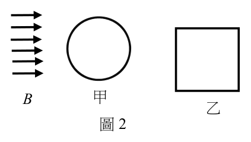
（A） 線圈的總電阻:甲>乙（B） 磁場B 於線圈內產生的應電流:甲=乙（C） 通過線圈、由磁場B 產生的磁通量:乙>甲
B 甲 乙（D） 磁場B 對線圈的磁作用力:甲>乙
圖2（E） 磁場B 於線圈內產生的感應電動勢:甲>乙答案：（B）
詳解與考點 正解：磁場方向與兩線圈平面平行，表示它和面積法線的夾角為 90°。因此每一線圈的磁通量 ΦB=BA cos90°=0，即使 B 隨時間改變，感應電動勢 E=−dΦB/dt 仍為 0，感應電流也都為 0，故選 B。
A：同種銅線的電阻與線長成正比；圓形甲的周長為 πd，小於正方形乙的周長 4d，所以甲的總電阻較小。
C：兩線圈的磁通量皆為 0，不能因面積或外形不同而判成乙較大。
D：感應電流皆為 0，磁場對載流線圈的合力也皆為 0，沒有甲較大的情形。
E：感應電動勢由磁通量的變化率決定；本題磁通量始終為 0，兩者皆無感應電動勢。
本題考點：磁通量（magnetic flux）——ΦB=BA cosθ 中的 θ 是磁場與面積法線的夾角；法拉第定律（Faraday’s law）——只有磁通量改變才產生感應電動勢；導線電阻（wire resistance）——材料與截面相同時，電阻只隨導線總長改變。
第 6 題
一樂器上張緊的絃兩端固定,其基音頻率 f 0 = 252 Hz 。若在張力不變下,按住此絃的中
點,則彈奏此絃時發出基音 0f ' 為 0f 的多少倍?
（A） 0.25（B） 0.5（C） 1（D） 2（E） 4答案：（D）
詳解與考點 正解：固定兩端的弦，其基音頻率 f=(1/2L)√(T/μ)。按住中點後，有效振動長度由 L 變成 L/2，而張力 T 與線密度 μ 不變，所以 f'=[1/(2×L/2)]√(T/μ)=2f。原基音雖為 252 Hz，倍數只由長度比決定，故選 D。
A：弦長減半不會使頻率降為四分之一；頻率與弦長成反比。
B：0.5 倍同樣把長度與頻率的反比關係判成同向關係。
C：按住中點改變了有效弦長，基音不可能維持不變。
E：頻率對弦長是一次反比，不是與弦長平方成反比，因此不會變為 4 倍。
本題考點：駐波（standing wave）——固定兩端的基音波長為有效弦長的 2 倍；弦振動頻率（frequency of a stretched string）——f=(1/2L)√(T/μ)，張力與線密度不變時 f∝1/L；有效弦長（effective vibrating length）——按弦位置成為新節點，決定可振動的長度。
第 7 題
一容器內的理想氣體,莫耳數為n,內能為U ,密度為ρ,壓力為P ,絕對溫度為T ,
氣體分子的方均根速率為v ,理想氣體常數為R 。依據氣體動力論,在熱平衡狀態下,
下列關係何者正確?
（A） U = nRT（B） U = 3Pv / 2（C） P = ρv 2 / 3（D） P = ρv 2 / 2（E） Pv = nRT答案：（C）
詳解與考點 正解：氣體動力論把壓力連結到單位體積內分子的動能，使用方均根速率 v_rms 時，關係式為 P=(1/3)ρv_rms²。因此以題目的符號寫成 P=ρv²/3，故選 C。
A：內能與莫耳數、溫度的比例還取決於分子的自由度；即使是單原子理想氣體，也應為 U=(3/2)nRT，不是 nRT。
B：Pv 的量綱是壓力乘速率，不是能量，不能等於內能。
D：係數應為 1/3，不是 1/2。
E：理想氣體方程式是 PV=nRT，其中 V 是體積；題設的小寫 v 是方均根速率，不能混用。
本題考點：氣體動力論（kinetic theory of gases）——壓力由分子撞擊器壁的動量傳遞造成；方均根速率（root-mean-square speed）——P=(1/3)ρv_rms²；理想氣體方程式（ideal gas law）——PV=nRT 中的大寫 V 代表體積。
第 8 題
有一項理論認為所有比鐵重的元素都是超新星爆炸時形成的。已知235U 和238U 的半衰期
分別為 0.704 × 10 9 年和 4.47 × 109 年,若地球上的鈾來自 5.94 × 109 年前的恆星爆炸,且爆炸
時產生相同數量的235U 和238U ,則目前地球上兩者的數量比235 U/ 238 U 約為下列何者?
（A） 2− 9（B） 2− 7（C） 2− 5（D） 2− 3（E） 2− 1答案：（B）
詳解與考點 正解：兩種鈾在恆星爆炸時數量相同，所以比較經過同一段時間後各自剩下的比例即可。235U 經歷的半衰期數為 5.94×10^9 年 / (0.704×10^9 年) = 8.44；238U 為 5.94×10^9 年 / (4.47×10^9 年) = 1.33。故目前 N(235U)/N(238U) = 2^-8.44 / 2^-1.33 = 2^-7.11，最接近 2^-7，故選 B。
A：2^-9 把相對衰變的指數估得過大；238U 也已衰變約 1.33 個半衰期，不能視為完全未變。
C：2^-5 對 235U 相對於 238U 的額外衰變估計不足，所得比值偏大。
D：2^-3 幾乎只反映兩者半衰期長短的粗略比較，沒有依 5.94×10^9 年分別計算衰變次數。
E：2^-1 更忽略了 235U 已歷經八個以上半衰期，與剩餘量會大幅下降的結果不符。
本題考點：放射性衰變（radioactive decay）——經過時間 t 後，剩餘量以 2^(-t/T) 表示；同源核種的相對含量——初始量相同時，兩者比值要相除兩個剩餘比例，指數因此相減。
第 9 題
下列哪一現象,不能將光視為只是粒子或只是波,而必須根據光具有二象性才能解釋?
（A） 一個氫原子躍遷發出的光向四周傳播時,另一氫原子可吸收此光的全部能量（B） 光在大氣中會折射而沿彎曲的路線前進,產生海市蜃樓的現象（C） 光通過狹縫後在遠處屏幕上可形成明暗相間的干涉條紋（D） 光沿著直線前進可穿過真空由太陽傳至地球（E） 光由空氣中入射到金屬表面後會被反射答案：（A）
詳解與考點 正解：一個氫原子發出的光向四周傳播，須用波動性描述其空間傳遞；另一氫原子卻可一次吸收完整的能量量子，須用粒子性描述能量交換。同一現象同時包含傳播與量子化吸收，因此必須以光的二象性說明（A），故選 A。
B：大氣折射可由光在介質中波速改變與波前方向改變說明，波動模型已足夠。
C：狹縫後的明暗干涉條紋是波的疊加結果，以波動性即可解釋。
D：光可在真空中直線傳播是電磁波傳播的性質，不必同時訴諸粒子模型。
E：光在金屬表面的反射可由電磁波邊界條件說明，單用波動模型即可處理。
本題考點：波粒二象性（wave-particle duality）——當現象同時要求描述空間傳播與離散能量交換時，需兼用波與粒子觀點；光子（photon）——光與原子交換能量時以離散能量量子表現；波動光學（wave optics）——干涉、繞射與折射優先由波的疊加或波前變化判斷。
第 10 題
如圖3a 所示,在失重的太空站上,水滴(折射率 n' = 4 / 3 )與空氣泡(折射率 n =)可1
形成同心的圓球透鏡。當平行於光軸OA 的近軸光線,由空氣入射通過半徑為R 的實心
水球後,會通過焦點F,OF = 2R ,如圖3b 所示;反之,平行的近軸光線由水中入射通
過半徑為R 的空氣泡後,會發散而使光線在向後延伸後通過F',OF' = 3 R / 2 ,如圖3c。
因此有空氣泡的水球,就類似於豎立於O,外圈為會聚、內圈為發散的薄透鏡。若如圖
3a,一物體在有氣泡的水球左側遠處,發出近軸的光,則人眼在圖3a 右側遠處沿著光
軸望向此有氣泡的水球時,所看到該物體的像為下列何者?注意:即使氣泡球換為不透
明的圓球,外圈的水球還是能夠完整成像的。
O A O A n n R F R n
圖3a 圖3b 圖3c
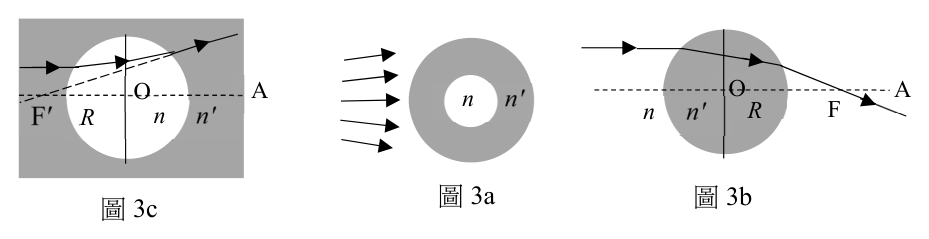
（A） 只有正立虛像（B） 只有倒立虛像（C） 只有正立實像（D） 只有倒立實像（E） 既有正立虛像,也有倒立實像答案：（E）
詳解與考點 正解：外圈水球的焦距為 2R，對遠物形成倒立實像；中央光線再通過空氣泡時，等效焦距由 1/f=1/(2R)+1/(-3R/2)=1/(2R)-2/(3R)=-1/(6R) 得 f=-6R，形成正立虛像。兩條光路並存，故可同時看見兩種像。故選 E。
A：只有正立虛像忽略了未經空氣泡的外圈水球；該部分仍是會聚系統。
B：倒立像由會聚光路形成時是實像，不是虛像。
C：中央等效系統為發散透鏡，遠物經發散後不會形成正立實像。
D：只有倒立實像忽略中央空氣泡造成的發散光路與其正立虛像。
本題考點：薄透鏡組合（combination of thin lenses）——同軸透鏡近接時以 1/f=1/f1+1/f2 合併光學功率；會聚與發散——會聚透鏡可使遠物成倒立實像，發散透鏡對實物成正立虛像；分區成像——不同區域通過的光線若經歷不同光學系統，可能同時形成不同像。
第 11 題
在研究浮體時,同學推測圓柱浮體能否穩定維持直立,與密度有關。故決定先測量圓柱
體的體積,而以同一根米尺對圓柱體的直徑與高度各測量4 次,結果記錄於下表,最右
3 欄為計算機運算程式所給4 次測量值的平均值、標準差平方與1/12。
標準差
第1 次 第2 次 第3 次 第4 次 平均值 1/12 平方
直徑(mm) 121.2 121.5 121.0 121.9 121.400 0.1533333 0.083333
高度(mm) 100.0 100.8 100.4 101.2 100.600 0.2666667 0.083333
若以下各測量值括弧內±號後的數字代表組合不確定度,則下列敘述何者正確?
測量項目 第1 次 第2 次 第3 次 第4 次 平均值 標準差 平方 1/12 直徑(mm) 121.2 121.5 121.0 121.9 121.400 0.1533333 0.083333 高度(mm) 100.0 100.8 100.4 101.2 100.600 0.2666667 0.083333
（A） 直徑的測量值為(121.4 ± 0.2)mm（B） 直徑的測量值為(121.4 ± 0.5)mm（C） 高度的測量值為(100.60 ± 0.39)mm（D） 高度的測量值為(100.60 ± 0.26)mm（E） 圓柱體體積的組合不確定度等於高度與直徑兩者之組合不確定度的和
二、多選題(占35分)答案：（C）
詳解與考點 正解：高度平均值的 A 類標準不確定度要先除以測量次數。u_A=√(0.2666667/4) mm=0.258 mm；尺讀值的 B 類標準不確定度為 u_B=√(1/12) mm=0.289 mm。兩來源獨立時以平方和開根號合成：u_c=√(0.258²+0.289²) mm=√0.150000 mm=0.387 mm，依選項位數約為 0.39 mm，所以高度為（100.60±0.39）mm，故選 C。
A：直徑的 0.2 mm 約只保留重複測量的 A 類不確定度，尚未納入尺讀值的不確定度。
B：直徑的兩項不確定度若直接相加約為 0.5 mm；獨立不確定度應以平方和開根號合成，不是線性相加。
D：0.26 mm 是高度的 A 類不確定度，漏掉 B 類不確定度後才會得到這個數值。
E：圓柱體積 V=πd²h/4，誤差傳遞要依各變數的靈敏度處理，例如 d 的相對不確定度要乘上 2，不能把高度與直徑的絕對組合不確定度直接相加。
本題考點：組合標準不確定度（combined standard uncertainty）——獨立來源以 u_c=√Σu_i² 合成；平均值的不確定度（standard error of the mean）——重複測量的變異須除以測量次數後再開根號；誤差傳遞（uncertainty propagation）——乘冪關係應使用相對不確定度與冪次。
第 12 題 （多選）
在水平地面上,以不可伸長的細繩繞過定滑輪,將質量分別為 m 1 、 m 2 的上、下兩個均
質箱子連接如圖4。已知重力加速度為g ,細繩與滑輪之間無摩擦力,且其質量均可忽
略,下箱之上、下表面的動摩擦係數皆為μ,
若下箱受到水平拉力F 時,兩箱不轉動,均 m1
以等速度水平移動,則下列敘述哪些正確? F m2
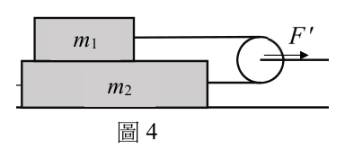
（A） 地面施於下箱的正向力為 ( m 1+ m 2 ) g 圖4（B） 施於下箱的水平拉力 F = μ(3m1 + m 2 ) g（C） 所有作用於上箱的水平力所產生的力矩為零（D） 所有作用於上箱的垂直力所產生的力矩為零（E） 右邊支架施予滑輪的水平力量值F' ,一定小於F答案：（A）（B）（E）
詳解與考點 正解：兩箱等速且不轉動，先用各箱的平衡條件判力。上箱的繩張力為 T=μm1g；地面支撐兩箱，正向力 N=(m1+m2)g。下箱的拉力須平衡地面摩擦 μ(m1+m2)g、與上箱接觸的摩擦 μm1g 及繩張力 T，故 F=μ(3m1+m2)g；滑輪受兩段張力的水平合力 F'=2T，小於 F。故選 ABE。
A：地面承受兩個箱子的總重量，故正向力為 (m1+m2)g。
B：代入 T=μm1g 後，下箱水平方向的三項阻力相加，正好得到 μ(3m1+m2)g。
E：F'=2μm1g，而 F-F'=μ(m1+m2)g>0，所以支架的水平力量值必小於 F。
C：不轉動只表示全部力矩的總和為零；上箱的水平作用力可因作用點不同形成力矩，不能把水平方向的力矩單獨判為零。
D：垂直接觸力的作用線可提供與其他力矩相抵的效應；無轉動不代表所有垂直力各自產生的力矩皆為零。
本題考點：受力平衡（equilibrium）——等速度運動時各方向合力為零；動摩擦力——先由接觸面的正向力寫 f=μN，再代回各物體受力圖；力矩平衡——不轉動的判準是所有力矩總和為零，不可任意拆成水平力矩或垂直力矩各自為零。
第 13 題 （多選）
如圖5 所示,兩片完全相同、可視為無限大的平行金屬薄板U 與D,間距固定為5d ,
以銅線連接到電位恆為0 的接地體G,最初U 與D 均不帶電。今將與U、D 完全相同、
帶電量Q+ 且不接地的金屬薄板T 平行移入,並固定於上板下方2d 處。已知連接兩板的
電力線數目,既與兩板間的電場成正比,也與起點或終點處的電量成正比,且D、T 間
的電位差與U、T 間的電位差相等,則在靜電平衡時,
下列敘述哪些正確? U 2d
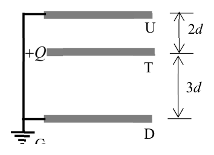
（A） D、T間的電場量值為U、T間電場量值的1.5倍
T（B） 以U板與D板為終點的電力線數目相等 3d（C） T板受到向上的靜電力（D） T板受到的靜電力為零 D
G（E） U板上的電量為D板上電量的1.5倍
圖5答案：（C）（E）
詳解與考點 正解：U、D 都接地，T 到兩板的電位差相同。U、T 間距為 2d、D、T 間距為 3d，故 EUT=V/(2d)、EDT=V/(3d)，所以 EUT 是 EDT 的 1.5 倍。兩板的感應電量大小與各區電場成正比，U 板電量為 D 板的 1.5 倍；T 受上方較強的吸引，合力向上。故選 CE。
C：T 兩側皆受異號感應電荷吸引，但上方電場較強，故淨靜電力向上。
E：感應電量大小與終止於板面的電力線數成正比，而電力線數又與電場成正比，故 |QU|/|QD|=3/2。
A：距離較短的 U、T 間電場較大；把較大的 1.5 倍配到 D、T 間是倒置了。
B：兩接地板到 T 的距離不同，感應電量及終止電力線數不會相等。
D：兩側吸引力並不相等，因間距造成的電場差使 T 不可能受力為零。
本題考點：接地導體（grounded conductor）——接地板可與大地交換電荷而維持固定電位；平行板電場——同一電位差下 E=V/d，間距較小者電場較強；感應電荷——比較兩側電場或電力線數，即可比較導體表面的感應電量與受力。
第 14 題 （多選）
如圖6所示，磁場垂直指入紙面，使通過正方形迴路ABCD的磁通量，穩定地以\(1.0Tm^{2}/s\)的時間變化率增加，AB段與CD段的電阻分別為0.6kΩ與0.4kΩ。將伏特計\(V_{1}\)與\(V_{2}\)的正極（＋）分別接到A、D點，負極（－）分別接到B、C點，測得的電壓值分別為\(V_{1}\)與\(V_{2}\)。假設迴路上應電流I產生的磁場與通過伏特計的電流均可忽略，則下列選項中哪些關係式可能是正確的？
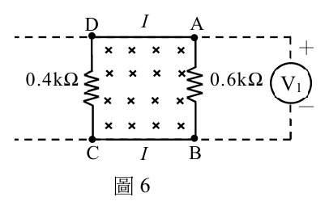
（A） I=1mA（B） I=1μA（C） \(V_{1}=V_{2}=0.6V\)（D） \(V_{1}=-0.6V\)，\(V_{2}=0.4V\)（E） \(V_{1}=0.6V\)，\(V_{2}=0.4V\)答案：（A）（D）
詳解與考點 正解：磁通量的變化率為 1.0 T·m^2/s=1.0 V，迴路感應電動勢量值為 1.0 V。總電阻為 0.6 kΩ+0.4 kΩ=1.0 kΩ，因此 I=1.0 V/(1.0×10^3 Ω)=1.0×10^-3 A=1 mA。磁場指入紙面且增加時，感應電流須產生指出紙面的磁場，方向為逆時針；故 V1=VA-VB=-0.6 V、V2=VD-VC=0.4 V。故選 AD。
A：由 ε=IR 代入 ε=1.0 V、R=1.0 kΩ，即得 I=1 mA。
D：逆時針電流使 AB 段電流由 B 流向 A，V1 為負；CD 段由 D 流向 C，V2 為正，數值分別為 0.6 V 與 0.4 V。
B：1 μA 會對應總電阻約 1 MΩ，與題設 1.0 kΩ 不符。
C：兩段電阻不同，依 V=IR 得到的端電壓量值不會相等。
E：電流方向已由楞次定律固定，兩個伏特計的正負號不能同時取為正。
本題考點：法拉第定律（Faraday's law）——以 |ε|=|dΦ/dt| 求感應電動勢；歐姆定律——串聯迴路先求總電阻，再以 I=ε/R 求電流；楞次定律（Lenz's law）——先用反抗磁通量變化決定電流方向，最後才判伏特計正負。
第 15 題 （多選）
中空圓筒形導體中的電流所產生的磁場,會對其載流粒子施加磁力,故被用於設計能
提供安全核能且燃料不虞匱乏的核熔合反應器。圖7 所示為筒壁很薄、半徑為R 的鋁
製長直圓筒,電流I 平行於筒軸穩定流動,均勻通
過筒壁各截面,而可當作為n 條完全相同且平行 I R i
i
的長直載流導線,每條導線的電流都為i = I / n 。 i
i 若n 比1 大得多,並以P→代表每單位面積垂直作 圖7
用於筒壁的磁力,則下列敘述哪些正確?
成正比
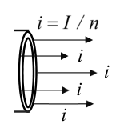
（A） →沿半徑向筒外P（B） →沿半徑向筒內P（C） →與P R 2
成正比（D） →與IP 成正比（E） →與P 2I答案：（B）（E）
詳解與考點 正解：圓筒壁可視為許多同向平行載流導線；相鄰導線彼此吸引，合力使筒壁沿半徑向內。筒壁附近的磁場量值隨 B∝I/R，磁壓量級 P∝B^2，因此 P∝I^2/R^2。故選 BE。
B：同向平行電流相吸，圓周各處的合力指向筒軸，故磁力壓力向筒內。
E：P∝B^2 且 B∝I/R，所以壓力與 I 的平方成正比。
A：若力向外，需是圓周導線間的斥力；本題各微小載流線方向相同，應為吸引。
C：半徑增加會使同一總電流產生的磁場減小，壓力應隨 1/R^2 下降，不是隨 R^2 增加。
D：磁壓由磁場能量密度決定，電流從 I 變為 2I 時壓力變為 4 倍，不是 2 倍。
本題考點：平行載流導線——同向相吸、反向相斥，可先判力的方向；長直導線磁場——固定總電流時 B∝I/R；磁壓（magnetic pressure）——以 P∝B^2 判斷電流與尺度的平方關係。
第 16 題 （多選）
因為新冠肺炎的流行,餐廳經常在桌面上豎立壓克力板,以防止用餐時飛沫的傳播。
若將厚度h 的透明平板豎立於有方格紙圖案的餐桌上,使板面平行於水平格線,如圖8
示意圖。當垂直於板面正視時,發現板後水平格線的位置都往平板移動。若空氣折射
率為1,平板的折射率為n,則下列敘述哪些正確?注意:圖8 為手機拍攝到的畫面,
其格線距離與真實距離不同。
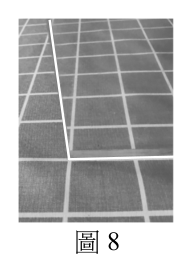
（A） 板後水平格線的位移量值,隨其距離板面的遠近而有不同（B） 板後水平格線的位移量值,不隨平板厚度而變（C） 板後各水平格線的位移量值都為 h / n（D） 板後各水平格線的位移量值都為(1h − 1/ n )（E） 測得水平格線位移量值與平板厚度的比值,即可決定折射率n 圖8答案：（D）（E）
詳解與考點 正解：垂直透過折射率為 n 的平行透明板觀察時，板後格線的等效位移量為 Δ=h-h/n=h(1-1/n)，方向朝平板。此量只由板厚 h 與折射率 n 決定，不隨格線距離改變；量得 Δ/h 後可反解 n=1/(1-Δ/h)。故選 DE。
D：位移量為 h(1-1/n)，這正是平板兩界面折射造成的總橫向位置差。
E：Δ/h=1-1/n，故只要量得此比值即可求得 n。
A：各格線都經過相同厚度的平板，位移量不以格線離板面的距離而改變。
B：公式含有 h，板愈厚位移愈大，不能說與厚度無關。
C：h/n 是透過平板後的等效厚度，不是相對於原位置的位移量；位移還要扣除 h/n 與 h 的差。
本題考點：平行平板折射（parallel slab refraction）——正視時以等效厚度 h/n 表示板內光路；表觀位移——用原厚度減等效厚度，得 Δ=h(1-1/n)；比值法——未知折射率時先量無量綱的 Δ/h 再反解。
第 17 題 （多選）
依據波耳的氫原子模型,若兩個處於量子數 n =的基態氫原子,在發生正向碰撞後停止1
不動,接著都只發出同一種單頻光,其光子的能量均為10.204 eV ,則下列敘述哪些正
− 27 2
確?(氫原子的質量為 1.67 × 10 kg ,氫原子的能量為 En =− 13.606 eV/ n ,
1 eV=1.602 × 10 − 19 J )
（A） 碰撞後兩個氫原子都被激發到 n = 2 的能階（B） 在碰撞前每個氫原子的動能都為3.4 eV（C） 在碰撞前兩個氫原子的總動量大於零（D） 在碰撞前每個氫原子的速率大於30 km/s（E） 兩個氫原子發出的都是可見光答案：（A）（D）
詳解與考點 正解：氫原子由 n=2 回到基態 n=1 時，能量差為 E2−E1=−13.606/4−(−13.606)=10.204 eV，正好等於題給的光子能量，因此碰撞後兩原子都在 n=2，故（A）成立。每個原子被激發所需能量為 10.204 eV，且碰撞後都停止，故碰撞前每個原子的動能 K=10.204 eV=10.204×1.602×10⁻¹⁹ J=1.635×10⁻¹⁸ J。v=√(2K/m)=√[2×1.635×10⁻¹⁸/(1.67×10⁻²⁷)] m/s=4.4×10⁴ m/s=44 km/s，大於 30 km/s，因此（D）也成立，故選 AD。
A：10.204 eV 正是 n=2 到 n=1 的躍遷能量，所以發光前兩個原子皆須位在 n=2。
D：由每個原子的激發能量換算速率約為 44 km/s，確實大於 30 km/s。
B：3.4 eV 不足以讓一個基態氫原子升到 n=2；所需能量是 10.204 eV。
C：正向碰撞後兩原子皆停止，總動量守恆要求碰撞前兩原子的動量大小相等、方向相反，總動量為零而非大於零。
E：10.204 eV 的光子屬紫外線範圍，不是可見光。
本題考點：波耳氫原子模型（Bohr model）——能階依 E_n=−13.606/n² eV 量子化，躍遷能量是兩能階之差；能量與動量守恆（conservation of energy and momentum）——碰撞後狀態同時限制碰撞前的動能與總動量；光譜（atomic spectrum）——光子能量決定其所屬電磁波頻段。
第 18 題 （多選）
圖9a 與9b 所示的兩個圓筒A 與B 完全相同,A 筒左端封閉,並配置無摩擦的活塞C;
B 筒兩端封閉,以裝有活門D 的固定隔板分成兩室,兩筒與氣體接觸的各部分均為絕
熱體。最初時,A 筒內部與B 筒左室都裝有壓力 0P 、溫度 T0 、體積 V0 的相同理想氣體,
活塞C 在向左外力F 作用下保持靜止,而B 筒的活門D 為關閉,右室為真空。當減小
外力F 使活塞C 緩慢移動到A 筒右端後停下時,A 筒內的氣體因膨脹作功溫度變為 TA;
而打開活門D 後,氣體在不作功下自由膨脹至充滿B 筒,溫度變為 TB 。若打開活門D
的功可忽略,則下列關係哪些正確?
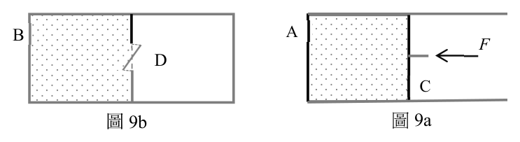
（A） T0 > TB（B） T0 = TB A F B
D（C） T0 > TA
C（D） TA > TB
圖9a 圖9b（E） TA= TB答案：（B）（C）
詳解與考點 正解：A 筒中的氣體緩慢絕熱膨脹時，Q=0 且氣體對外作功 W>0，所以 ΔU=-W<0；理想氣體內能只與溫度有關，故 T_A<T0。B 筒打開活門後是對真空的自由膨脹，Q=0、W=0，因此 ΔU=0，得到 T_B=T0。故（B）、（C）正確，故選 BC。
B：自由膨脹沒有外界反壓，氣體不作功；又筒壁絕熱，理想氣體溫度保持 T0。
C：A 筒的絕熱膨脹消耗內能以作功，所以溫度必低於初溫 T0。
A：（A）與自由膨脹的能量結果相反；理想氣體在 B 筒的 T_B 應等於 T0。
D：A 筒的溫度因作功而降低，B 筒溫度維持初溫，因此不可能有 T_A>T_B。
E：兩者過程不同：A 筒作功而降溫，B 筒不作功而維持原溫，故 T_A 不等於 T_B。
本題考點：熱力學第一定律（first law of thermodynamics）——先分別判斷熱量 Q 與作功 W，再由 ΔU=Q-W 判斷內能；理想氣體自由膨脹（free expansion of an ideal gas）——絕熱且不作功時內能與溫度不變；絕熱膨脹（adiabatic expansion）——氣體對外作功會使內能下降，溫度降低。
2021 年12 月發射的James Webb 太空望遠鏡(JWST)主要用於紅外線天文學的研究,是目前太空中最強大的望遠鏡,它的溫度必須保持低於50 K,才可在不受其他熱輻射源的干擾下觀察微弱的紅外線信號。JWST 的位置靠近日—地系統的拉格朗日點 L 2 ,此為日—地連心線上的定點,位於地球公轉軌道外側,如圖10 所示,其中實線的圓弧與圓分別代表地球與月球的公轉軌道。已知在 L 2 點的小物體,受到日—地系統的重力,可與地球同步繞日—地系統的質心公轉。
日假設只考慮來自日、地的重力,日—地的距離近似為定 C 地球
值R,日、地的質量分別為M 、m,地心到 L 2 的距離為 R r
月 L2r ,重力常數為G ,日—地系統繞其質心C 轉動的角速
率為ω。注意:只有日—地系統的質心C 可視為靜止, 圖10
日、地與 L 2 處的小物體均繞C 以角速率ω做圓周運動。
第 19 題
已知地心到C 的距離為 MR ( M + m ) ,則角速率的平方 ω為下列何者?(單選)2
2 M + m 2 M + m 2 m
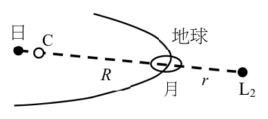
（A） ω = G（B） ω = G（C） ω= G
r 3 R 3 r 3
2 m 2 M（D） ω= G（E） ω= G
R 3 r 3答案：（B）
詳解與考點 正解：日、地都繞共同質心 C 做角速度為 ω 的圓周運動，地球到 C 的距離為 MR/(M+m)。以地球受太陽重力提供向心力，GMm/R^2=mω^2×MR/(M+m)，約去 m 與 M 後得 ω^2=G(M+m)/R^3。故選 B。
A：角速度由兩體系統的總質量 M+m 與兩者距離 R 決定，不能只保留其中一個天體的質量。
C：r 是地球到 L2 的距離，不是日、地兩體的軌道分離距離；日、地系統的角速度不以 r 為分母。
D：若只用地球質量或把質心距離誤作日地距離，會遺漏另一個天體對共同轉動的貢獻。
E：角速度平方的分母應是兩體間距 R 的三次方，不可把 L2 的位置距離混入兩體運動公式。
本題考點：兩體圓周運動（two-body motion）——兩物體皆繞質心轉動，先寫質心距離再列向心力；萬有引力與向心力——令 GMm/R^2=mω^2rEarth 可消去受力物體質量；拉格朗日點——小物體的位置不改變日地系統本身的角速度。
第 20 題
承第19 題,地心到 L 2 的距離r 滿足下列何者?(單選)
M m MR 2 M m 2
（A） G 2 + 2 = + r ω（B） G 2 + 2 = Rω
( R + r ) r M + m ( R + r ) r
M m 2 M m 2（C） G 2 + 2 = ( R + r )ω（D） G 2 + 2 = rω
( R + r ) r ( R + r ) r
M m mR 2（E） G 2 + 2 = + r ω
( R + r ) r M + m 答案：（A）
詳解與考點 正解：關鍵在 L2 位於地球外側，且日、地與 L2 均繞共同質心 C 以角速率 ω 運動。以單位質量的小物體計，日、地重力在 L2 處同向，故重力加速度為 G[M/(R+r)^2 + m/r^2]。L2 到 C 的半徑為 C 到地球的距離加 r，即 MR/(M+m)+r；因此向心加速度為 [MR/(M+m)+r]ω^2。令兩者相等即得 A，故選 A。
B：R 是日地間距，不是 L2 到 C 的圓周半徑。
C：R+r 是日心到 L2 的距離；旋轉中心為 C，不能作為向心半徑。
D：r 只表示地心到 L2 的距離；L2 的圓周半徑還要加上地球到質心 C 的距離。
E：mR/(M+m) 是太陽到 C 的距離，不是地球到 C 的距離；L2 在地球外側時，應取 MR/(M+m)+r。
本題考點：質心（center of mass）——做向心運動時，半徑一律取物體到共同質心的距離，不取兩物體間距；拉格朗日點 L2（Lagrange point L2）——位於日地連線外側時，日、地重力方向相同，可將兩個重力加速度相加；向心加速度（centripetal acceleration）——以 a_c = ρω^2 建立方程，其中 ρ 為相對旋轉中心的半徑。
第 21 題
將上題結果中的r 改為r−,可看出在日—地連心線上,位於地球公轉軌道內側、距離地
心為r 處,尚有一個可與地球同步繞日公轉的定點,稱為拉格朗日點 L1 。依題幹所述,
為了避免其他熱輻射源的干擾,以觀察廣闊範圍內來自宇宙各處的微弱紅外線信號,
JWST 的位置選擇 L 2 ,比起 L1 有何優點?試舉出二項優點。(4 分)
本題選項為上圖中的 A／B／C／D，請對照圖片作答。
標準答案未收錄
詳解與考點 正解：題眼是題幹的兩個限制——「溫度必須保持低於 50 K，才可在不受其他熱輻射源干擾下觀察微弱紅外線信號」與「觀察廣闊範圍內來自宇宙各處的微弱紅外線信號」，所以比較 L1 與 L2 的判準是「高溫熱源能不能被同一面遮陽板擋掉」與「可觀測天區會不會被遮擋」，不是重力或距離大小。由圖 10 的幾何：L2 在日—地連心線上、位於地球公轉軌道外側，從 L2 望出去，太陽、地球、月球都落在同一側的窄角度範圍內；把 r 改成 −r 得到的 L1 則在地球公轉軌道內側，太陽在望遠鏡的一側、地球與月球在相反的一側。優點一：在 L2 只要一面背向太陽的遮陽板，就能同時屏蔽太陽、地球、月球三個紅外輻射源，望遠鏡本體容易被動維持在 50 K 以下；若放在 L1，太陽與地球分居兩側，單一遮陽板遮不住兩邊，必須加裝第二面遮蔽或改用耗電的主動製冷。優點二：在 L2，遮陽板背後就是同時背向日、地、月的整片深空，可連續指向的天區廣闊、不被地球與月球擋住；在 L1，背向太陽的觀測方向正對地球與月球，那一大片視野被高溫天體佔據，既被遮擋又受其熱輻射污染。故可作答「（一）日、地、月位於同一側，單一遮陽板即可同時屏蔽三者的熱輻射，較易維持 50 K 以下的低溫；（二）遮蔽方向的背面是完整深空，可觀測天區廣闊且不受地球、月球遮擋與干擾」。
本題考點：拉格朗日點 L1 與 L2 的幾何差異（Lagrange points）——比較兩點優劣時先在連心線上畫出日、地、月相對該點的方位，再看熱源是否集中於同一側；紅外線觀測的被動熱屏蔽（thermal shielding）——紅外儀器的關鍵限制是背景熱源，能否用單面遮陽板一次解決是選址判準；觀測幾何——可持續指向且無高溫天體遮擋的天區愈大，愈適合長時間累積微弱訊號。
二十世紀初期對於光電效應有許多不同的解釋,密立根經由實驗證實愛因斯坦的光量子論,從而奠定了現代光電科技的基礎,現代生活中常見的太陽能板,能將太陽能轉換為電能,即是應用此一效應。令h 代表普朗克常數,e 代表基本電荷。
第 22 題
假設f 為光頻率,λ為光波長,c 為光速,E 為光量子能量,則下列關係何者正確?(單
選)
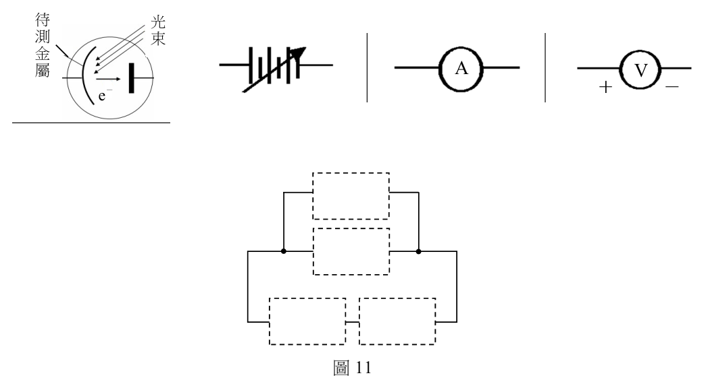
（A） E = hc 2 / λ（B） E = hλ（C） E = hλ2（D） E = hf（E） E = hf 2答案：（D）
詳解與考點 正解：光量子能量與頻率成正比，普朗克關係式為 E=hf；又因光速 c=fλ，也可改寫為 E=hc/λ。題目所列各物理量中，只有（D）同時符合能量的定義與量綱，故選 D。
A：多乘上一個 c，量綱不再是能量。
B：能量不與波長 λ 成正比；由 E=hc/λ 可知波長越長，單一光子的能量越小。
C：λ 的平方更不符合 E 與 λ 的反比關係，量綱也錯誤。
E：頻率平方會使量綱多出 1/s，不能表示能量。
本題考點：普朗克關係式（Planck relation）——單一光子的能量為 E=hf；波速關係（wave-speed relation）——電磁波滿足 c=fλ；量綱分析（dimensional analysis）——先檢查單位能快速排除多乘或多平方的式子。
第 23 題
(1) 於作答區將下表的元件圖例,繪製於如圖11 所示的虛線方格中,並加以正確連
接(注意接點的極性),使其成為光電效應實驗的電路圖。(2 分)
(2) 承(1),若對同一金屬,選擇多種波長不同、但都能產生光電效應的入射光進
行測量,則對於其中每種波長的入射光,必須改變何種物理量,使電路的電流發
生何種情況,並取得哪個物理量的實驗數據,才能估測普朗克常數對基本電荷的
比值 h / e ?(2 分)
光電管 可調直流電壓源 直流安培計 直流伏特計
待 光
測 束
金 A V
屬 - + -
e
圖11
本題選項為上圖中的 A／B／C／D，請對照圖片作答。
標準答案未收錄
詳解與考點 正解：電路應讓光電管、可調直流電壓源與直流安培計串聯，直流伏特計則跨接在光電管兩端。為量遏止電位，收集極相對待測金屬接負，形成阻擋光電子的反向電壓。對每一種入射光頻率 f，逐步增大反向電壓，直到光電流 I 降為 I=0；此時伏特計讀值為截止電壓 V0。記錄各組 (f,V0) 後，利用 eV0 = hf−W 作 V0 對 f 圖，其斜率 ΔV0/Δf = h/e。
本題考點：光電效應（photoelectric effect）——遏止電位使最快光電子剛好無法到達收集極，故電流降為零；截止電壓（stopping potential）——每個波長都要各自掃描反向電壓並讀取 V0；線性化作圖（linearization）——把 eV0 = hf−W 改寫成 V0=(h/e)f−W/e，可由斜率取得 h/e。
第 24 題
圖12 為密立根測得的光電效應數據。他使用光槓桿裝置來記錄光電流的大小,即是以
光點偏移量(mm)代表光電流值。
(1) 試依據圖 12 中入射光波長 λ= 546.1 nm 、433.9 nm 、365.0 nm (頻率
f = 5.49 × 1014 Hz 、 6.91 × 1014 Hz 、 8.22 × 1014 Hz )的三組數據與其趨勢線,估測
截止電壓(即遏止電位) V0 ,將其值填入作答區的表格第3 列。(2 分)
(2) 於方格紙中作 V0 − f 圖。(2 分)
(3) 求出普朗克常數與基本電荷的比值 h / e 。(2 分)
80
70
60 λ=546.1 nm λ=433.9 nm λ=365.0 nm
50
40
30
20 光電流(偏移量mm) 10
0
0.2 0.3 0.4 0.5 0.6 0.7 0.8 0.9 1.0 1.1 1.2 1.3 1.4 1.5 1.6 1.7 1.8
電壓(V)
圖12
本題選項為上圖中的 A／B／C／D，請對照圖片作答。
標準答案未收錄
詳解與考點 正解：三條趨勢線都要外推到光電流為 0 的橫軸截距，分別讀為 V01、V02、V03。題目給的頻率依序為 f1=5.49×10^14 Hz、f2=6.91×10^14 Hz、f3=8.22×10^14 Hz；以 (f1,V01)、(f2,V02)、(f3,V03) 作 V0−f 圖並畫出最佳直線。由 eV0=hf−W 可得 h/e 為直線斜率，例如 h/e=(V03−V01)/(8.22×10^14−5.49×10^14) V·s；截距則為 −W/e。
本題考點：遏止電位（stopping potential）——光電流剛降為零時的反向電壓才是 V0，不能用任一非零電流點代替；愛因斯坦光電方程（Einstein photoelectric equation）——V0 與頻率 f 呈線性關係，斜率為 h/e；圖表斜率（graphical slope）——求斜率時使用相距較遠的兩點可降低讀圖誤差。
聲波和光波一樣,在通過狹隘的開口往前傳播時都會出現繞射現象,而適用相同的繞射公式。圖13 的矩形喇叭筒擴音器,是瑞立發明的,目的是在起大霧時,使喊
話或警報能傳播到海岸邊一個大角度扇形水平區域內的船隻,避免將聲波
h
能量浪費於向上或向下的傳播,w 與h 分別代表矩形開口的寬度與高度。
當波發生繞射時,波強度出現極小值的角度θ,與波長λ和狹縫寬度a 的關
係為 w
a sinθ = nλ (0 ≤ θ ≤ 90 °, n=1,2,3,...) (1)式 圖13比起光波,聲波的波長λ與狹縫寬度a 的比值通常較接近於1,因此上式不易出現 n >的情1況,以致聲波由開口向外傳播時主要會分布在張角為 2θ的角度內,此處1 sinθ1 = λ/a ,而張角是指以開口為頂點所張的角度。當 λ/ a > 1 時,(1)式無解,表示開口就近似於一個點,其向外傳播之聲波在開口前方的分布範圍(即張角),可達到180°。
第 25 題
已知人大力喊話時,主要不是透過基頻而是透過頻率約3 kHz 的泛音與噪音傳送資訊。
而近似為矩形擴音器時,人的嘴巴相當於寬度約6 cm 的開口。若聲速為340 m/s,則人
張口大力喊話時,在其前方可涵蓋的水平扇形區域,其張角最接近下列何者?(單選)
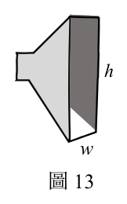
（A） 20°（B） 30°（C） 50°（D） 90°（E） 180°答案：（E）
詳解與考點 正解：題幹指定用頻率 3 kHz 的聲音傳遞資訊，波長 λ=v/f=340 m/s/(3.0×10^3 s^-1)=0.113 m。嘴巴寬度 a=6 cm=0.060 m，因此 λ/a=0.113/0.060≈1.9>1；第一個繞射極小值無解，開口近似點聲源，水平張角達 180°。故選 E。
A：20° 需要 λ/a 遠小於 1，與本題約 1.9 不符。
B：30° 同樣把開口誤當成遠大於波長的狹縫，會低估聲波的繞射。
C：50° 仍假定存在第一個極小值；但 λ/a>1 時 sinθ1 無法成立。
D：90° 未反映點狀開口在前方半平面可達的完整 180° 分布。
本題考點：波長——先用 λ=v/f 換算聲波波長；單狹縫繞射（single-slit diffraction）——以 a sinθ1=λ 判斷第一個極小值是否存在；點聲源近似——當 λ/a>1 時，前方張角以 180° 判斷。
第 26 題
(1) 依據瑞立矩形開口擴音器的目的與聲波傳播的特性,建構一個關於瑞立矩形開口
擴音器如何工作的理論模型,亦即說明該擴音器的寬度w 與高度h ,各與聲波波
長λ具有什麼關係(需列出關係式),並預測要使聲波在水平方向的分散角度大
於垂直方向的分散角度,w 與h 的大小關係應為何。(3 分)
(2) 承(1),若要驗證該擴音器可達到聲音在水平與垂直方向的分散效果,在固定
擴音器寬度w 與高度h 的情況下,需要測量何種數據?答題時若用到數學式或圖
形,須說明所用各符號的定義。(3 分)
本題選項為上圖中的 A／B／C／D，請對照圖片作答。
標準答案未收錄
詳解與考點 正解：題眼是題幹給的繞射關係 a sinθ = nλ，以及「聲波的 λ/a 通常接近 1」「λ/a > 1 時 （1）式無解、張角可達 180°」這兩句，所以整題的判斷規則是「開口尺寸與波長的比值決定該方向的分散角」。第（1）小題：水平方向的分散由寬度 w 控制，張角為 2θ₁，其中 sinθ₁ = λ/w；垂直方向的分散由高度 h 控制，張角為 2θ₁'，其中 sinθ₁' = λ/h。要讓聲波在水平方向散成大角度扇形（極端情況 λ/w > 1 使 （1）式無解、張角達 180°），需要 w 與 λ 相當或更小，即 w ≤ λ；要讓能量不浪費在向上向下傳播、垂直分散角很小，需要 h 遠大於 λ，即 h ≫ λ，此時 sinθ₁' = λ/h 很小。兩式相除得 sinθ₁/sinθ₁' = h/w，故水平分散角大於垂直分散角的條件是 h > w，理想配置為 w ≤ λ ≪ h。第（2）小題：固定 w 與 h 後，先取得聲波波長 λ——量出頻率 f 並用聲速 v 換算 λ = v/f；再以開口為圓心、固定距離 R，在水平面上改變方位角 φ 量聲音強度 I(φ)（或聲壓級，單位 dB），在鉛直面上改變仰角 α 量 I(α)，各畫出「強度對角度」的分布曲線。從兩條曲線讀出強度首次降到極小的角度，水平者記為 θ₁、垂直者記為 θ₁'，即可檢驗 sinθ₁ = λ/w 與 sinθ₁' = λ/h 是否成立，並直接比較 2θ₁ 是否大於 2θ₁'。符號定義：w 為開口寬度、h 為開口高度、λ 為聲波波長、v 為聲速、f 為頻率、R 為量測半徑、φ 為水平方位角、α 為垂直仰角、I 為聲音強度。故可作答「（1）sinθ₁ = λ/w、sinθ₁' = λ/h，需 w ≤ λ 且 h ≫ λ，故 h > w；（2）固定 w、h，在等距 R 處分別量水平與垂直方向的聲強對角度分布，讀出各自的第一極小角 θ₁ 與 θ₁'，比較 2θ₁ > 2θ₁' 並驗證 sinθ = λ/a」。
本題考點：單狹縫繞射的第一極小（single-slit diffraction）——用 a sinθ₁ = λ 判斷分散角，開口相對波長愈窄則張角愈大；λ/a > 1 的物理意義——方程式無解代表不存在極小值方向，波近似由點源向前方散開至 180°；實驗設計的可測量——要驗證角度分布，量的是「等距處聲強對角度」的曲線，並須獨立取得 λ（由 v 與 f 換算）。
其他年度
回到分科測驗物理的年度總覽 ，
或到分科測驗題庫首頁 看其他科目。
題目與標準答案出自大考中心 分科測驗歷年試題（依著作權法 §9，考試試題不受著作權保護）。依中華民國《著作權法》第 9 條第 1 項第 5 款，
依法令舉行之各類考試試題不得為著作權之標的，得自由利用。詳解為 AI 整理的學習輔助，
並非官方標準答案 ；中華民國會修訂，引用前請對照現行版本查證。